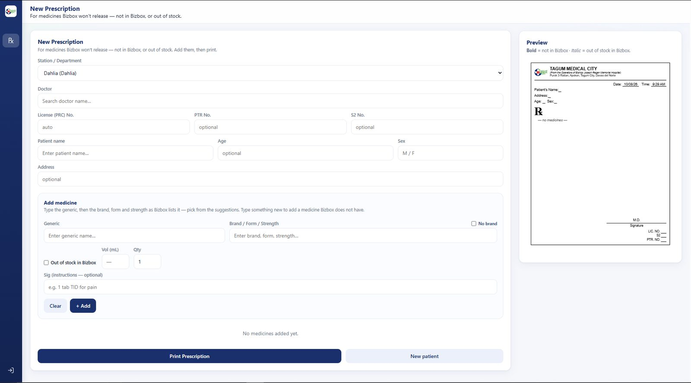
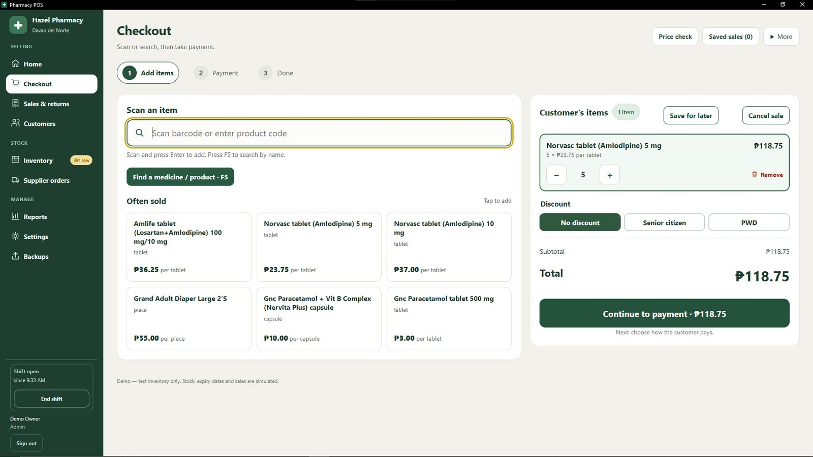
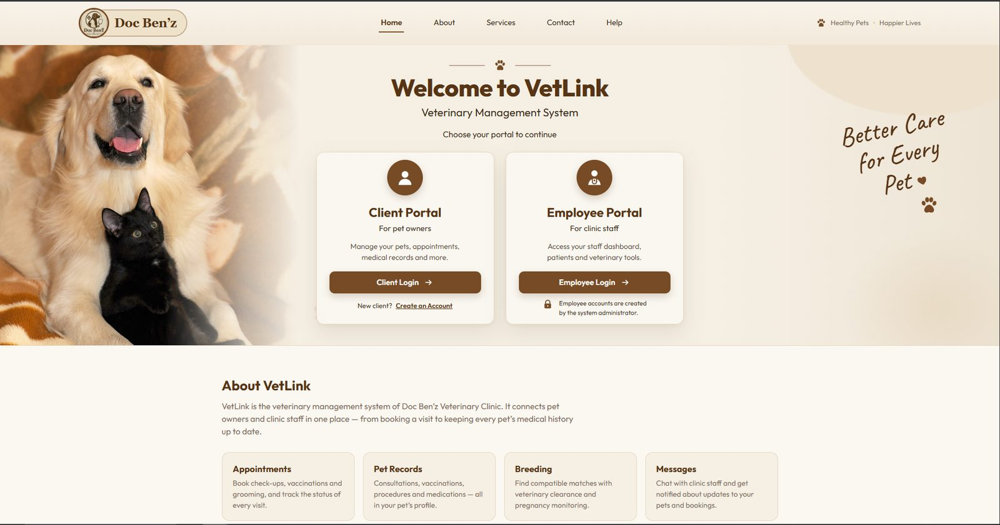

Featured work, Simpson Spence Young
Taking a ship broker platform live on Azure
The brokers needed to leave their old system for a new platform. I put it into production on Microsoft Azure, wrote the playbook the company now builds by, then moved its files and its data across.
- Node.js
- TypeScript
- React
- PostgreSQL
- Azure DevOps
- Azure Blob Storage
- REST APIs
The record
2021 to now
-
2023 – now
Node.js Application Developer
Simpson Spence Young, global ship brokerage
- Took the ship broker platform from development to production on Microsoft Azure: code, databases, blob storage and a CI/CD pipeline.
- Documented the whole setup in a 60+ page Azure deployment and CI/CD guide, now the company's standard engineering reference.
- Migrated the platform's files from Cloudinary to Azure Blob Storage.
- Migrated hundreds of thousands of records from RavenDB 3.5 to PostgreSQL, single-handed, safely and accurately.
- Build backend features in Node.js and TypeScript, design REST APIs and PostgreSQL schemas, and ship full-stack work with React.
-
2021 – 2023
Freelance Software Developer
Independent
- Delivered complete client systems end to end: a learning management system, a class management system and a medicine delivery app.
- Built the backend for a smart parking system with real-time availability tracking.
-
2021 – 2022
IT Consultant
H2-MED Business Enterprise
- Built and deployed Java business and point-of-sale systems used in daily commercial operations.
Selected work
Hospitals, clinics, shops and communities
-
RX System
Tagum Medical City
Prescription generator and pharmacy demand tracker for a hospital, with a locked-down kiosk client for nursing stations.
- Express
- PostgreSQL
- Podman
- Electron

-
Pharmacy POS
Community pharmacy
Offline Windows app for sales, inventory and dispensing records, shipped as one installer with its own bundled database.
- Vue
- Electron
- Express
- Prisma
- PostgreSQL

-
Clinic system for appointments, pet records, reservations, chat and breed matching, with separate portals for pet owners and staff, plus an Android app for owners.
- Express
- Firestore
- Android (Java)

-
VeggieTrack
Farm-to-market traceability
Follows each harvest from farmer to courier in batches, with QR codes and photo proof at every hand-off.
- Express
- Firebase
-
Therapy center system
Child therapy center
Enrolment, session requests, appointments, payroll and reports, with separate views for admin, secretary and cashier.
- Express
- Firebase
-
Learning management system
Freelance client
Teachers post activities and track each student’s progress; students submit work online, with uploaded documents converted to PDF for review.
- Express
- EJS
- Prisma
- Passport
-
Class management system
Freelance client
Runs a school’s classes, teachers, students, subjects, school years and grades from one admin panel.
- Express
- EJS
- Prisma
- Passport
-
Medicine delivery app
Freelance client
Online medicine ordering with carts, doctor consultations, pharmacists and delivery drivers, each with their own role.
- Java
- Spring Boot
- MySQL
-
H2-MED POS & business system
H2-MED Business Enterprise
A desktop point of sale with discounts, invoices and stock transfers between stores, plus a back-office system for inventory, branches, suppliers, expenses and sales reports.
- Java
- Swing
- JasperReports
-
Bean Counter In progress
Café POS product
Step-by-step ordering, recipes that deduct stock automatically, sales reports, staff PINs and cloud backup.
- Node.js
- PostgreSQL
-
Skill Quest
Teaching platform
The coding-practice platform I built to train developers in JavaScript: challenges, quizzes, sandboxed browser tests and instructor reviews.
- Express
- EJS
- CodeMirror
- Supabase
Toolkit
- Backend
- Node.js, TypeScript, Express, Java, Spring
- Frontend
- React, Vue.js
- Data
- PostgreSQL, MySQL, Prisma, Firebase, Supabase
- Cloud & DevOps
- Microsoft Azure, Azure DevOps CI/CD, Blob Storage, Git, Docker & Podman
- Desktop & mobile
- Electron, Android (Java)
- 3D
- Modelling, rigging, animation
B.S. Information Technology, magna cum laude, University of Mindanao, 2023
The next chapter
My goal is to be the first AAA game developer in the Philippines.
Every production system I ship gets me closer. Until then, I'm building the backends, pipelines and platforms that teams depend on.
Open to remote backend and cloud roles.